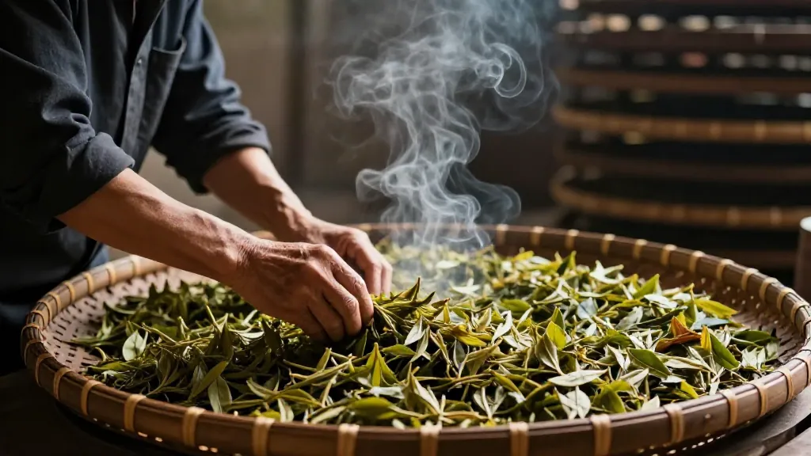

🏛️ 2026年夏，惠州东平老茶街。
📌 第一幕：茶桌上的海陆丰
阿凤姐的茶店里，来了位特殊的客人——汕尾陆丰来的林伯，七十六岁，退休前是正字戏的鼓师。
「凤姐，你这家店凤凰单丛做得地道。但你知不知道，咱海陆丰人喝茶，跟你潮州人不一样？」
阿凤姐放下盖碗：「您说。」
「你们潮州人讲『工夫茶』，一壶三杯，关公巡城，韩信点兵，精细得像绣花。我们海陆丰人喝茶，粗粝得多——大壶大碗，擂茶里加花生芝麻草药，开丁茶里拌虾米萝卜干。但骨子里，是一样的。」
林伯喝了口蜜兰香，闭上眼睛：「都是这片山头的水土养的。凤凰山往南三百公里，就是海陆丰。一条韩江，把福佬文化、客家文化串在了一起。」
📌 第二幕：八大文脉，一杯茶
汕尾市海陆丰地区，是多元文化的聚集地。福佬文化、客家文化、中原文化长期交流融合，并受广府文化影响，继承了百越文化遗风。八大文脉根系造就了独特的「海陆丰文化」：海防文化、客家文化、闽南福佬文化、红色文化、妈祖文化、雷公文化、民俗文化、开放文化。
阿凤姐听着，忽然明白了什么：「您说的八大文脉，其实都能在一杯茶里找到影子。」
海防文化：明朝抗倭时期，海陆丰沿海的将士出征前，必饮一杯擂茶提神。那茶碗里搅动的不仅是草药，是保家卫国的血气。
客家文化：陆河县的客家人，逢「开丁节」必煮「开丁茶」——菜茶里拌虾米、粉丝、萝卜干，请乡邻共食。添丁是喜事，茶是媒介，把血缘和地缘搅在一起。
闽南福佬文化：海陆丰的「福佬话」与潮州话同源，正字戏用中州官话唱念，白字戏由闽南流入，西秦戏带着西北腔——这些戏曲里，茶水是道具，也是情节。戏台上的老爷端起茶杯，台下的观众便知道：有事要发生。
妈祖文化：大湖镇五身妈祖巡游时，信众奉上的第一杯不是酒，是清茶。茶要新，水要净，杯要白——象征妈祖的圣洁。那杯茶从凤凰山采来，经韩江水运，最终敬在妈祖像前。一杯茶，走了几百公里。
📌 第三幕：非遗里的茶魂
海陆丰被誉为「中国民间文化艺术之乡」，拥有1个世界级、9个国家级、29个省级非物质文化遗产。阿凤姐发现，这些非遗里，茶无处不在。
正字戏：距今800多年的古老南戏变体，戏班下乡演出，后台必有一壶热茶。老艺人说：「嗓子是茶养出来的，不靠润喉糖。」
汕尾渔歌：瓯船渔民所唱歌调，被誉为海洋音乐「活化石」。渔民出海归来，第一件事是烧水煮茶——那茶不是工夫茶的精致，是大陶壶里咕嘟咕嘟的粗茶，配上刚捞的海鲜。茶香混着海腥，是海陆丰独有的味道。
甲子英歌舞：明初从福建传入，600年历史，融合武术、傩舞和正字戏脸谱。英歌队表演前，队长要喝三杯茶：第一杯敬天地，第二杯敬祖先，第三杯敬自己。那三杯茶，必须是凤凰单丛——因为只有单丛的烈，配得上英歌的刚。
盖仔狮：海陆丰「狮中之王」，源于古代军队傩仪。舞狮人出场前要喝茶，不是为解渴，是为定神。茶一入喉，锣鼓响起，人就进了另一个世界。
📌 第四幕：擂茶与工夫茶的对话
林伯从包里掏出一个小竹筒，倒出里面的粉末——擂茶渣。
「这是我老伴擂的。茶叶、芝麻、花生仁、草药，放在擂钵里慢慢研磨。你们潮州工夫茶讲『精』，我们海陆丰擂茶讲『厚』——厚味、厚情、厚意。」
阿凤姐接过竹筒，闻了闻：「草药味……是薄荷还是艾草？」
「薄荷提神，艾草祛湿。海边湿气重，不喝这个，关节受不了。」林伯说，「你们凤凰单丛是『品』，我们擂茶是『养』。一个往上走，追求香气的高妙；一个往下沉，扎根泥土的实在。但都是中国人的活法。」
阿凤姐忽然想起一件事：「林伯，您听说过没有？凤凰山有些老茶农，年轻时也在海陆丰种过茶。韩江上下游，茶树的根其实是连着的。」
林伯点点头：「我阿爷那辈，就是从凤凰山迁到陆丰的。走的时候带了一包茶籽，种在自家后院。那棵茶树现在还活着，每年采的叶子，不够一斤。但我每年都留着，过年时泡给全家人喝。」
「那棵树的叶子，」阿凤姐问，「什么味道？」
「不像蜜兰香，不像鸭屎香。就是……老家的味道。喝一口，就知道根在哪里。」
📌 第五幕：一杯茶的地图
阿凤姐拿出一张纸，画了一条线：从潮州凤凰山，沿着韩江，经过汕头，到汕尾海陆丰。然后在线上标了几个点：
- 凤凰山：工夫茶的起点，单丛的故乡。六百年宋种，八克投茶，100度水，6秒出汤。
- 汕头：工夫茶的传播中心。开埠后，潮汕人把工夫茶带到南洋，带到香港，带到全世界。
- 海陆丰：工夫茶的变奏。擂茶、开丁茶、渔歌里的粗茶——不是工夫茶的退化，是另一种生存智慧。
「这条线，」阿凤姐说，「不是地理的分界，是文化的渐变。越往山里走，茶越精细；越往海边走，茶越粗犷。但越粗犷，越离不开根。」
📌 尾声：根在哪里
林伯临走时，把那包擂茶渣留在了茶桌上。
「凤姐，送你。下次有客人问你『茶是什么』，你就冲一壶这个。告诉他们：茶不只是喝的，是记住自己从哪来。」
阿凤姐收下竹筒，给林伯装了一包凤凰单丛。
「这是乌岽山的蜜兰香。您回去用擂茶的方式泡——大壶大碗，久焖出浓。看看凤凰山的茶，能不能喝出海陆丰的味。」
林伯笑了：「好。这才是中国人喝茶的样子——不讲究门派，只讲究心意。」
窗外是惠州的老街，韩江的水在远方流淌。阿凤姐泡了一壶单丛，对着那包擂茶渣，敬了一杯。
一杯敬凤凰山，一杯敬海陆丰。同根同源，千里共饮。